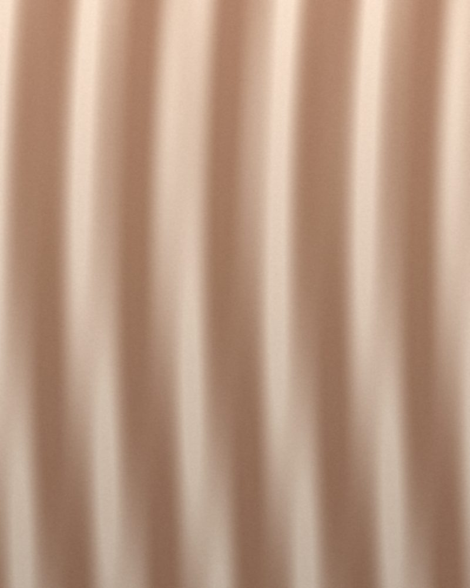
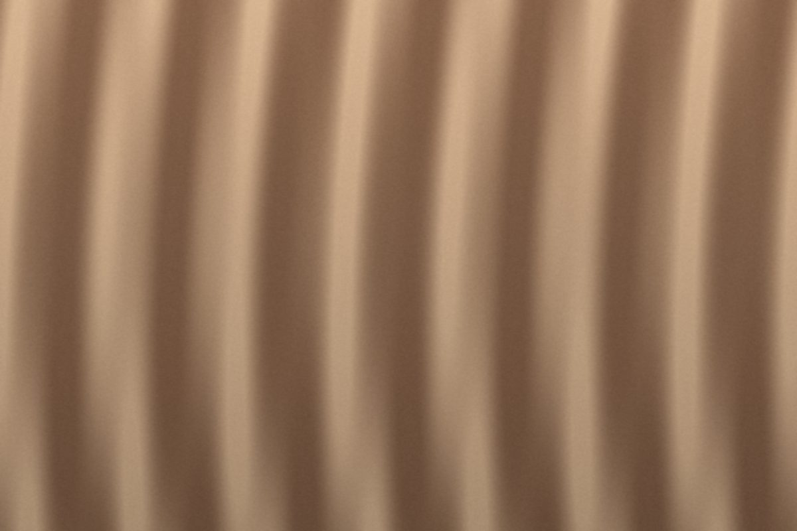
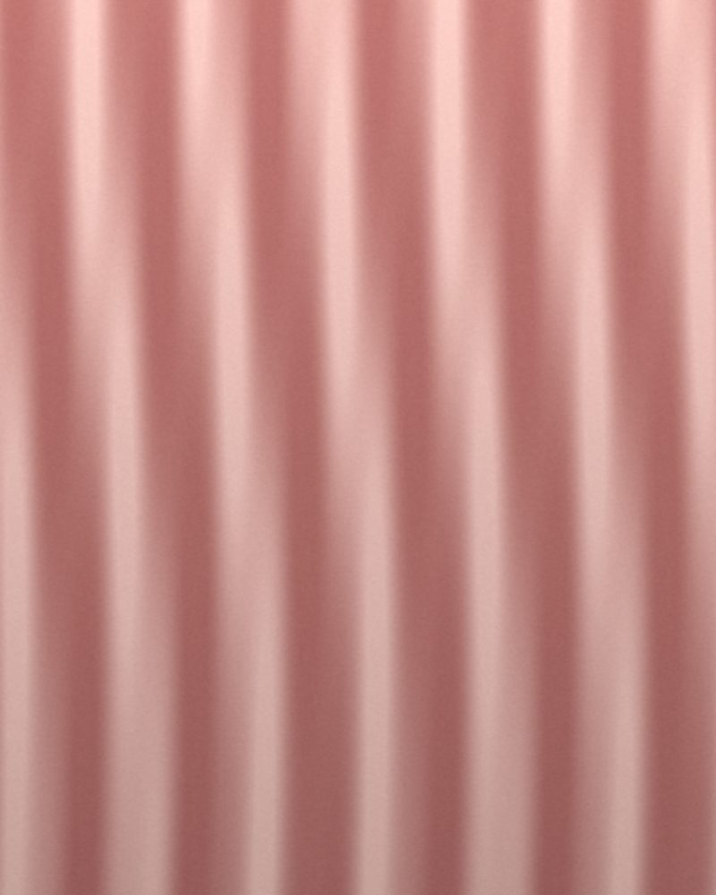
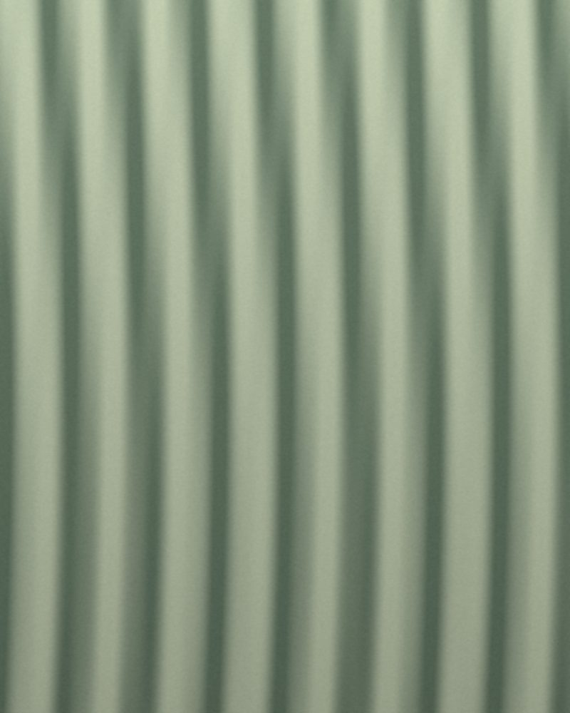

Tendances
Les couleurs sable reviennent cet hiver
Beige, camel, écru : la palette douce s'impose dans les collections.
N° 12 · Hiver 2026
ÉtoffeLe magazine de la mode qui dure

À la une · Tendances
Longtemps réservé aux vacances, le lin revient dans les vestiaires toute l'année. Superposé, épais ou mélangé à la laine, il change de saison.
Lire l'article
Tendances
Beige, camel, écru : la palette douce s'impose dans les collections.

Créateurs
Petites séries, tissus de stock et pièces faites pour durer.

Beauté
Moins de produits, mieux choisis : le guide pour l'hiver.

Street style
Manteaux longs, baskets et superpositions vus à Paris.
« La mode se démode, le style jamais. »
Coco Chanel